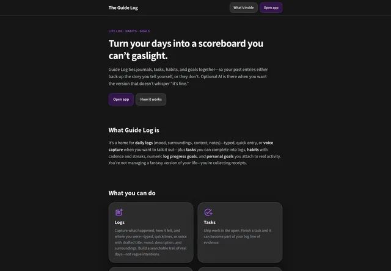
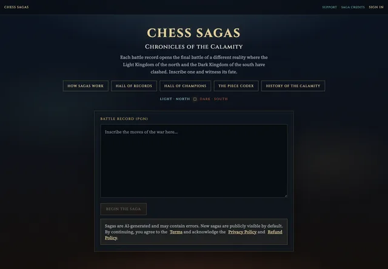

DON HUDSON · DEVELOPER & CREATOR
Ideas into code.
Code into something
real.
Web apps. Client websites. Things built out of curiosity.
Welcome to my corner of the internet — a collection of what I’ve been building.
BASED IN DELAWARE — BUILDING FOR THE WEB


01 / THE COLLECTION
A little bit of everything.
All built by me.
From the first experiment to the next big idea.
Explore the apps, websites, and side projects
that make up my work.
projects · A collection of ideas brought to life
No projects found.
Try another name, technology, or category.
02 / BEHIND THE BUILDS
Hey, I’m Don.
I like making things work.
I’m a developer based in Delaware and the person behind Cream of the Crop. What started with a college web development class around 2016 grew into client websites, full-stack apps, and a whole lot of experimenting.
I enjoy taking an idea from the first “what if” to something people can actually use. Sometimes that’s a website for a local business. Sometimes it’s a life log, a chess story, or a small project that teaches me something new.
Angular · TypeScript · NestJS · PostgreSQL
JavaScript · HTML & CSS · Vue
FastAPI · Python · AWS · AI
03 / WHAT’S NEXT?
Have something
in mind? Let’s talk.
A project, a collaboration, or just a hello.
I’d love to hear what you’re thinking.